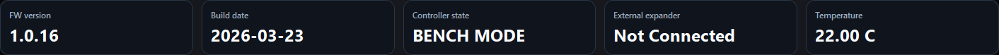
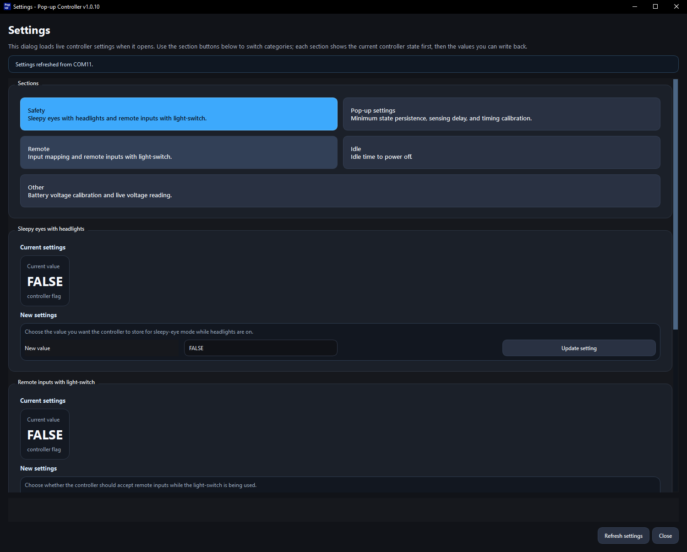
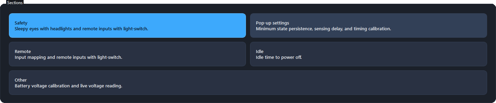
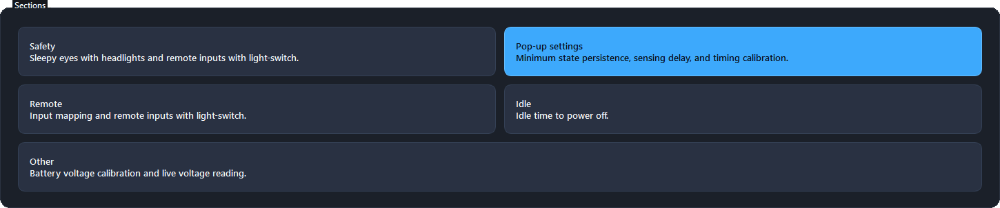
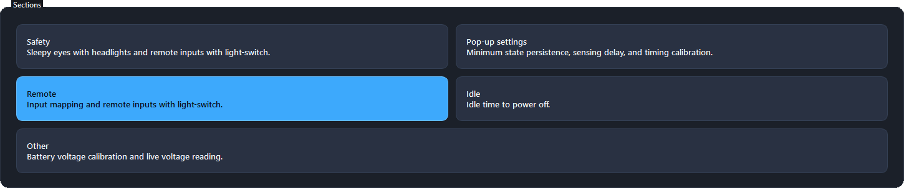
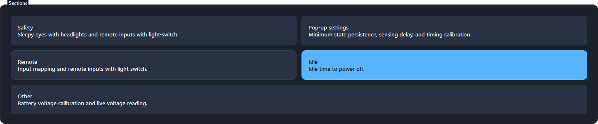
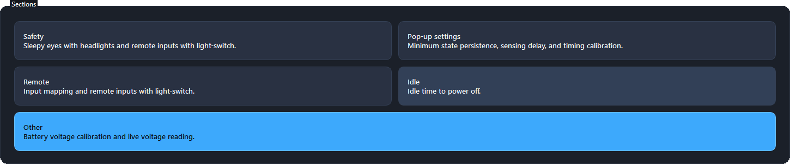
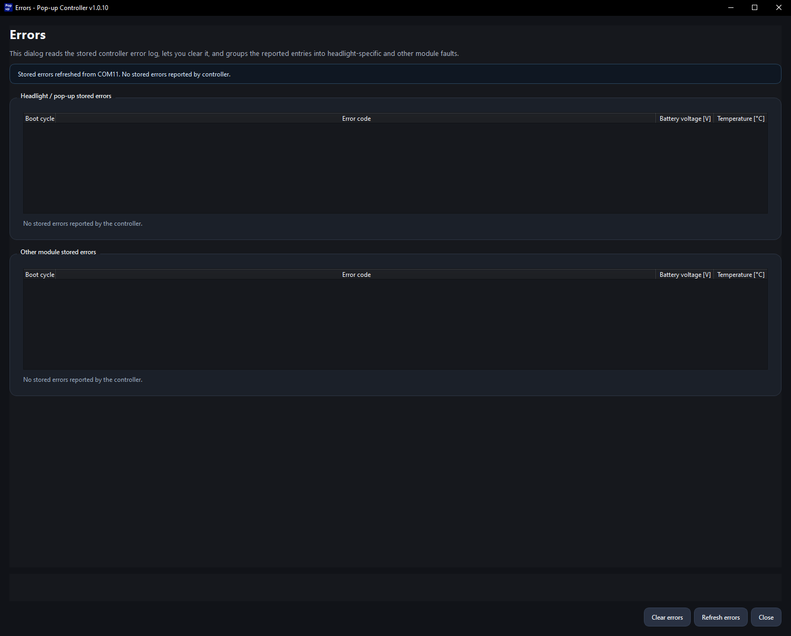
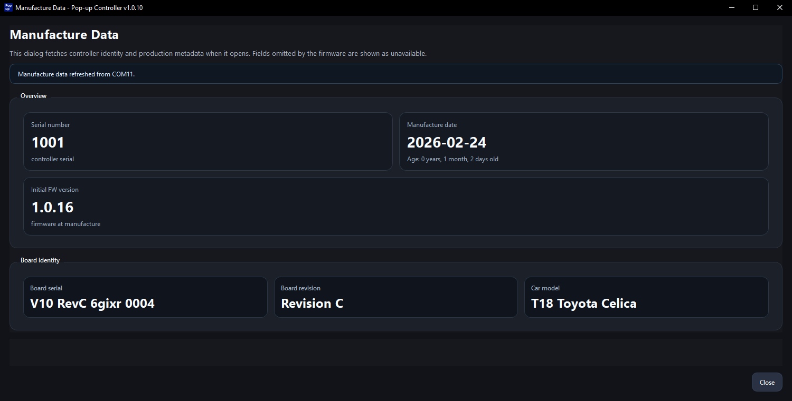
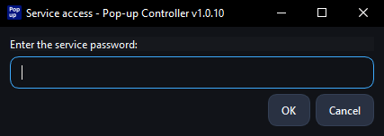

Precondition
Complete the App Setup Guide first.
Technical reference for the desktop app after the initial setup is complete.
Complete app setup before using anything on this page.
Complete the App Setup Guide first.
The desktop app is already downloaded and opens correctly.
The controller can be found and connected in the app.
The controller information appears normally after connection.
All sections start collapsed.
Main header values shown after connection.

Shows the firmware version currently running on the connected controller.
Shows the build date of the currently running firmware.
Current mode of the controller.
Shows the I2C address of the remote module.
Controller board temperature.
BENCH MODE: Voltage < 7 Volts. Controller runs in limited functionality, pop-up control is disabled.
RUNNING: Controller is running in the standard mode as is expected in the car.
COM port selection, finding the controller, connecting, and reconnecting.
Detailed screenshot and notes still need to be added.
Detailed screenshot and notes still need to be added.
Detailed screenshot and notes still need to be added.
Detailed screenshot and notes still need to be added.
Runtime, pop-up statistics, and input activity.
Settings overview and category-specific screenshots.


Parameter-level cards for this category will be added here.

Parameter-level cards for this category will be added here.

Parameter-level cards for this category will be added here.

Parameter-level cards for this category will be added here.

Parameter-level cards for this category will be added here.
Live actions triggered directly from the app.
Detailed screenshot and notes still need to be added.
Detailed screenshot and notes still need to be added.
Detailed screenshot and notes still need to be added.
Stored pop-up errors, other module errors, and error actions.

Shows stored errors related to the pop-up mechanisms.
Shows stored controller errors that do not belong to the pop-up mechanism section.
The dialog includes actions for clearing errors, refreshing the error list, and closing the window.
Controller identity and production metadata.

Shows serial number, manufacture date, and initial firmware version.
Shows board serial, board revision, and car model.
Useful for confirming controller identity or answering support questions.
Manufacturing-only service actions and password-gated access.
Contains service actions intended during manufacturing to load manufacturing data and setup calibrations.
This section is not intended for users.

Firmware tools and the hand-off to the flashing guide.
Detailed screenshot and notes still need to be added.
Detailed screenshot and notes still need to be added.
Use the dedicated flashing guide for the actual firmware update procedure.